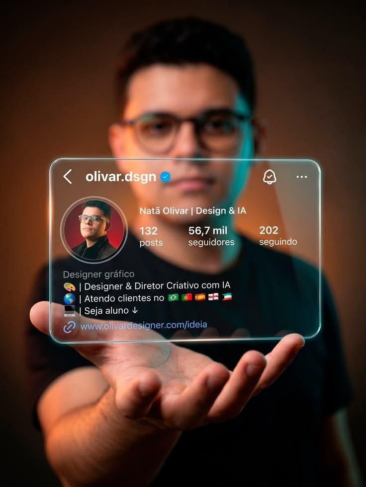

تصميم بصري
هوية بصرية تلفت النظر
تصميم يجمع عناصر الحساب في تكوين واضح، متوازن، وسهل التذكّر.
مونتاج فيديو · تصميم بصري · فضول تقني
أنا فارس علي. أمنتج فيديوهات يوتيوب والريلز، وأصمم صورًا مصغّرة تشدّ الانتباه من أول نظرة. أتعلم البرمجة لأحوّل الأفكار الجيدة إلى تجارب رقمية مفيدة.

نبذة عني
أعمل بشكل حر مع قناة يوتيوب، من ترتيب اللقطات وصناعة الإيقاع إلى اللمسات الأخيرة والصورة المصغّرة. أركز على أن يخدم كل تفصيل القصة، وأن يبقى المشاهد متفاعلًا حتى النهاية.
إلى جانب عملي الإبداعي، أبني مهاراتي في HTML وCSS وJavaScript من خلال مشاريع عملية. أحب أن أتعلم بالتجربة، وأجمع بين العين البصرية والتفكير المنظّم في كل عمل جديد.
فيديوهات يوتيوب ومقاطع قصيرة من البداية للنهاية.
صور مصغرة وأغلفة قنوات بهوية بصرية واضحة.
تعلّم أساسيات الويب وتطبيقها في مشاريع عملية.
نماذج من أعمالي
مونتاجات وتصميمات اشتغلت عليها، لكل واحد منها إيقاعه وطابعه.

تصميم يجمع عناصر الحساب في تكوين واضح، متوازن، وسهل التذكّر.
اختيار اللقطات والتوقيت يصنعان فرقًا من أول ثانية لآخرها.
تجربة قصيرة أوازن فيها بين الحركة والصوت والانتقالات.
مشروع برمجي تفاعلي
أداة ويب صغيرة تساعد على متابعة مراحل تجهيز الفيديو. صُممت لتجمع بين مجال عملي واهتمامي بتطوير الويب.
الخبرات العملية
قناة يوتيوب
صيدلية
مهاراتي
CapCut — متمرس
صور مصغرة وأغلفة قنوات
HTML وCSS وJavaScript
العربية: اللغة الأم • الإنجليزية: متقدم
التعليم والشهادات
طالب بالمرحلة الثانوية.
في البرمجة والذكاء الاصطناعي من جامعة هيروشيما (اليابان)، بعد اجتياز امتحاني الفصلين الدراسيين الأول والثاني.
مع هشام مصطفى.
لديك مشروع أو فرصة؟
احكي لي عن مشروعك، ونبدأ بخطوة بسيطة نحو نتيجة تستحق المشاهدة.